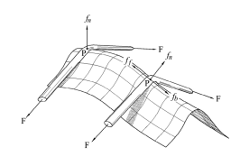
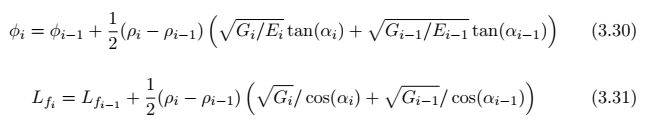

Capítulo 1 Introducción.
1.1 Motivación y Objetivos.
El bobinado de filamentos es un proceso de fabricación de piezas y componentes compuestos que produce productos livianos y de alta resistencia. Se utiliza principalmente para la producción de piezas simétricas de eje, como COPV (Composite Over-wrapped Pressure Vessels: recipientes a presión de materiales compuestos bobinados), tanques de almacenamiento, diferentes tipos de tuberías de alta presión, ejes de transmisión, pértiga y muchos otros, debido a la cinemática del propio proceso, lo que facilita la fabricación de este tipo de geometrías. Sin embargo, también se puede utilizar para producir piezas no simétricas respecto de un eje con gran éxito y amplia implementación, como se puede observar en la fabricación de palas de turbinas eólicas[8].
Debido a la relativa facilidad con la que se puede automatizar el proceso, ha demostrado ser no sólo un método de fabricación de alto rendimiento sino también muy rentable cuando se producen grandes cantidades. Debido a estos dos factores, este proceso ha sido ampliamente adoptado en industrias de todo el mundo y para una amplia variedad de aplicaciones [9].
El proceso utiliza un refuerzo continuo (fibra de vidrio, fibra de carbono, alambre, etc.) ya sea previamente impregnado (preimpregnado: termoestable o termoplástico) o impregnado localmente en un baño abierto o dispositivo cerrado antes de llegar al mandril (bobinado húmedo) con una matriz termoestable. que se coloca sobre un mandril giratorio y luego se cura. Dependiendo de cómo se aplique el refuerzo continuo sobre el mandril, se pueden realizar diferentes trayectorias y obtener diferentes patrones de bobinado que a su vez producen piezas con diferente apariencia y propiedades mecánicas.[10][9]
En el INEGI (Institute of Science and Innovation in Mechanical and Industrial Engineering: Instituto de Ciencia e Innovación en Ingeniería Mecánica e Industrial) -Instituto donde se desarrolló la tesis- existe una larga trayectoria de trabajo en el bobinado de filamentos. A través de este trabajo, se ha estudiado e investigado a fondo mucha información sobre diferentes aspectos del proceso y han transformado al instituto en una referencia de excelencia en el desarrollo de bobinados de filamentos. La máquina bobinadora de filamentos que tiene a su disposición el INEGI es una Pultrex MODwind 1S 6NC (Figura 1.1) la cual cuenta con 6 ejes controlables y es capaz de producir la mayoría de piezas imaginables. Sin embargo, durante todo este trabajo, las trayectorias reales del refuerzo continuo nunca se estudiaron de cerca, lo que hizo que el instituto dependiera de software externo para diseñar las piezas producidas.
 Figura 1.1: Pultrex MODwind 1S 6NC - Máquina Bobinadora de Filamentos de 6 ejes presente en las instalaciones del INEGI.
Figura 1.1: Pultrex MODwind 1S 6NC - Máquina Bobinadora de Filamentos de 6 ejes presente en las instalaciones del INEGI.
El estudio de las trayectorias del refuerzo continuo sobre la superficie de un mandril es de vital importancia porque permite evaluar y determinar las trayectorias que proporcionan las mejores propiedades mecánicas dentro de los límites geométricos y físicos especificados por el diseñador.
Por lo tanto, el objetivo de esta tesis es comprender, modelar y evaluar mejor los diferentes tipos de trayectorias que se pueden realizar a lo largo de las superficies de mandriles simétricos, interpretar cómo estos pueden usarse para producir piezas completas con diferentes patrones de bobinado y finalmente implementarlos en una máquina bobinadora de filamentos que producirá las piezas deseadas.
Para lograr este objetivo, se propuso un código numérico que sería capaz de crear automáticamente las trayectorias para el refuerzo continuo de acuerdo con las especificaciones geométricas y materiales proporcionadas por el diseñador. Este código se denominó Pathwind y se desarrolló de acuerdo a lo que se determinó eran las necesidades específicas del INEGI. Para desarrollar un código funcional y robusto, era necesario el establecimiento e implementación de un modelo que pudiera realizar las siguientes tareas:
- describir diferentes caminos geodésicos a lo largo de las superficies de cilindros y conos truncados;
- describir diferentes caminos no geodésicos garantizando al mismo tiempo la estabilidad de la fibra (sin deslizamiento entre fibra y mandril o fibra y fibra) a lo largo de las superficies de cilindros y conos truncados;
- determinar diferentes patrones de bobinado para mandriles, anchos de cable y ángulos de bobinado específicos;
- determinar los movimientos de los ejes de una máquina bobinadora de filamentos y generar un código CNC para su controlador con el fin de producir piezas con un patrón previamente seleccionado;
- Intentar describir el camino de los filamentos real con diferentes tipos de secciones transversales y superposiciones de filamentos.
Para el desarrollo del código y con el fin de probar primero los diferentes conceptos e ideas, se determinó que se aceptaba un primer enfoque de permitir únicamente mandriles que fueran cilindros o conos truncados. Esto también está en línea con los trabajos recientes que se desarrollan en el INEGI en bobinado de filamentos que habían sido específicos para diferentes tamaños y estratificaciones de tubos cilíndricos. Cualquier otra geometría de mandril con eje simétrico se puede discretizar en una multitud de cilindros y conos truncados y, por lo tanto, este enfoque se puede utilizar en el futuro para una solución más genérica.
Este código fue desarrollado en MatlabTM.
1.2 Esquema de tesis.
La tesis se divide en siete capítulos y dos anexos:
- El Capítulo 1 presenta el problema y define los objetivos de la tesis, así como su estructura;
- El Capítulo 2 proporciona información general sobre el bobinado de filamentos e introduce los conceptos matemáticos necesarios para comprender el desarrollo del código;
- El Capítulo 3 describe y explica los modelos utilizados para caracterizar los caminos de los filamentos a lo largo de la superficie de un mandril y cómo se implementaron;
- El Capítulo 4 describe la máquina Bobinadora de Filamentos que se utilizó en el INEGI y brinda una solución de cómo deben moverse los diferentes ejes para producir los recorridos previamente definidos a lo largo de una superficie de mandril real;
- El capítulo 5 especifica de qué manera se puede describir el camino de los filamentos para caracterizar completa y verdaderamente su comportamiento;
- El Capítulo 6 presenta los resultados de varias pruebas virtuales sobre el código desarrollado y muestra una pieza bobinada con filamento real que se fabricó únicamente mediante el uso del código Pathwind, validándola así experimentalmente;
- El Capítulo 7 tiene las conclusiones de las diferentes partes del proyecto y presenta el trabajo futuro que aún debe abordarse;
- El Apéndice A muestra el código MatlabTM que se produjo para esta tesis:
- - A.1 es el código del programa principal Pathwind, A.2 es una función utilizada por el programa principal y produce las formas fundamentales y coeficientes de Christoffel de la superficie del mandril y A.3 es un algoritmo de determinación de patrones [11];
-
- El Apéndice B es un manual de usuario sencillo que explica cómo utilizar el programa Pathwind.
function [b] = calculos_iniciales(a)
alfainicio = table2array(a(1,2));
zfm = table2array(a(2,2));
zi = table2array(a(3,2));
zim = table2array(a(4,2));
zfg = table2array(a(5,2));
zig = table2array(a(6,2));
rfm = table2array(a(7,2));
rim = table2array(a(8,2));
lm = zfm - zim;
dm = rfm - rim;
b = table('Size',[10 3],'VariableTypes',{'string','double','string'});
b(1,:) = {'alfai', (alfainicio * pi / 180),'alfa en radianes'};
b(2,:) = {'lm', lm,'longitud de laminación del mandril'};
b(3,:) = {'lg', zfg - zig,'longitud zona geodésica'};
b(4,:) = {'dm', dm,'diferencia de radio del mandril'};
b(5,:) = {'rig', ((zig * dm / lm) + rim - (dm * zim / lm)),'radio en el inicio de la zona geodésica'};
b(6,:) = {'ri', ((zi * dm / lm) + rim - (dm * zim / lm)),'radio de la sección del inicio del enrollamiento'};
b(7,:) = {'rfg', ((zfg * dm / lm) + rim - (dm * zim / lm)),'radio en el final de la zona geodesica'};
b(8,:) = {'tau', atan(dm / lm),'---'};
b(9,:) = {'zeroteta', (zfg + zig) / 2,'en coordenadas esféricas, el cero está en el medio'};
b(10,:) = {'rc', rim,'si es un cilindro, tiene el radio menor del mandril'};
end
Capítulo 2: Revisión de la literatura.
2.1 Introducción al bobinado de filamentos.
El bobinado de filamentos comenzó a utilizarse en la década de 1950 y es uno de los métodos más antiguos para procesar compuestos. Por su sencillez, fue uno de los primeros en automatizarse y por tanto uno de los primeros en poder garantizar resultados consistentes a sus piezas. Como resultado de esta simplicidad y facilidad de automatización, sigue siendo uno de los procesos más competitivos en la fabricación de piezas ligeras de calidad, además de ser altamente rentable [3][12].
Las primeras piezas de bobinado de filamento fueron las carcasas de los motores de cohetes en la década de 1950 y, para automatizar este proceso, se desarrollaron las primeras máquinas de bobinado de filamento. Se trataba de máquinas simples de 2 ejes (la rotación del husillo y la traslación del carro) que fueron adaptadas de los tornos (produciendo la bobinadora de filamentos tipo torno o bobinadora de torno). A partir del torno bobinador se realizaron mejoras para abrir la posibilidad de crear piezas diferentes y más complejas. En consecuencia, se introdujeron nuevos ejes empezando por el carro transversal, aunque todavía se producían únicamente piezas con ejes simétricos. A partir de entonces, se intentaron diferentes configuraciones para las máquinas de bobinado de filamentos y después de la bobinadora de torno vinieron la bobinadora polar, la bobinadora de pista y la bobinadora de tambor, por ejemplo [9][10].
 Figura 2.1: Bobinadora de torno simple [1]
Figura 2.1: Bobinadora de torno simple [1]
Durante la década de 1960, la industria aeroespacial transformó la industria de los compuestos y comenzó a invertir fuertemente en su investigación. Con esta investigación llegó el surgimiento de los recipientes a presión compuestos bobinados (COPV), que permitían presiones internas mucho mayores y al mismo tiempo pesaban menos que sus predecesores metálicos. Obviamente, esto fue muy apreciado en el diseño de cohetes y desde entonces se ha utilizado COPV en sus diseños [1].
Las industrias del deporte y la automoción también han sido importantes patrocinadoras del proceso de fabricación de bobinados de filamentos y lo han adoptado para una variedad de productos. Como se ha comentado anteriormente, los ejes de transmisión se han fabricado de esta forma, especialmente para vehículos de carreras, reduciendo el peso y aumentando las prestaciones. Las pértigas de salto con pértiga ahora se fabrican exclusivamente mediante bobinado de filamentos, ya que es posible controlar la elasticidad y rigidez alterando los patrones de bobinado. Los palos de golf fabricados de esta manera también se han adoptado ampliamente en los últimos años, lo que proporciona otra industria más donde esta tecnología puede crecer. Todos estos productos son piezas enrolladas con filamentos cilíndricas o cónicas.
La llegada de la tecnología informática y CNC supuso un gran avance en el bobinado de filamentos. Otorgó la capacidad de controlar mejor la colocación de las fibras y la precisión posicional, un mayor control de la velocidad y la posibilidad de interacción entre el software de simulación recién inventado y la máquina permitió realizar formas y formas más complejas. A lo largo de los años, se desarrollaron muchos software y entornos CAD/CAM que permitirían al usuario de una máquina bobinadora de filamentos controlada por CNC la posibilidad de diseñar piezas para diferentes formas de mandril y producir sus propias piezas [3].
Algunos de los software CAD/CAM existentes para aplicaciones de bobinado de filamentos son: CadFilTM, CadWindTM, FiberGraphixTM, CadPathTM y ComposicaDTM. Estos software proporciona diversos grados de control sobre el proceso de diseño y diferentes aplicaciones, tales como: mandriles con eje simétrico y no simétrico (incluidos codos y uniones en T) [13] [14], salida de malla FEA (Finite Element Analysis: análisis de elementos finitos) , bases de datos de materiales incorporadas, visualización gráfica del proceso y producto final, interfaces gráficas de usuario, salida de la máquina con optimización de tiempo y velocidad. Además de estos software disponibles, a lo largo de los años muchas instituciones y empresas han desarrollado su propio software ya sea para uso personal permanente o simplemente con fines de investigación. La mejora constante del software CAD para el bobinado de filamentos ha ayudado a avanzar la industria y aumentar las posibles aplicaciones del propio proceso de fabricación.
2.2 Trayectorias y geometría diferencial.
2.2.1 Formas fundamentales de las superficies.
Las formas fundamentales de una superficie permiten el cálculo de la curvatura y otras propiedades métricas.
Se consideró que una superficie tridimensional S puede parametrizarse como una función vectorial de dos parámetros reales independientes u y v de la siguiente manera:

La longitud del arco de una curva que pertenece a esta superficie viene dada por [15][16][17][18][19]:

Los diferenciales encontrados en la ecuación 2.2 se pueden expresar de la siguiente manera [18]:
donde # es un símbolo general que representa x, y o z.
De las ecuaciones 2.2 y 2.3 obtenemos lo siguiente:

dónde:

Los tres coeficientes que se muestran en las ecuaciones 2.5, 2.6 y 2.7 (E, F y G) son los coeficientes de la primera forma fundamental. Donde E representa la métrica en dirección meridional y G representa la métrica en dirección paralela. Su y Sv son las derivadas del vector de superficie S con respecto a u y v respectivamente [18][16][3][19].
Los coeficientes de la segunda forma fundamental también serán importantes en la derivación de curvaturas y se muestran a continuación:

Dado que las superficies simétricas de eje tienen una dirección u que es perpendicular a la dirección v, por definición F será cero. Si consideramos nuestro caso de una superficie eje simétrica (capa de revolución), podemos redefinir nuestra superficie y determinar los valores de las formas fundamentales [12][3]:

2.2.2 Geodésicas
Las geodésicas son una clase de curvas que generalmente se describen como el camino más corto a lo largo de una superficie entre dos puntos. A menudo se describe imaginando que usted conduce un automóvil sobre la superficie de la tierra y avanza en línea recta. Aunque en realidad no vayas en línea recta, seguirás tomando el camino más corto. La importancia de los caminos geodésicos para el bobinado de filamentos es bastante simple: en los caminos geodésicos no se aplican fuerzas laterales de ningún tipo, las únicas fuerzas aplicadas serán las normales a la superficie y, por lo tanto, se evitará el deslizamiento de la fibra.
Como ejemplo, las geodésicas a lo largo de una esfera son sus círculos máximos (círculos ecuatoriales en los que el centro coincide con el centro de la esfera) y en un cilindro forman una hélice. Para encontrar el camino mínimo, se propone una función que relaciona u y v de manera que minimice la longitud del arco [3][12]:
Si expresamos du dv como v0 y fijamos los puntos inicial y final:

Y como la integral será cero independientemente del cambio a δv, esto nos lleva a la ecuación de Euler-Lagrange [3][12]:

Reemplazando la función f con la expresión para la longitud de la curva (expresión 2.4) y después de reordenar, obtenemos [3]:
Donde Ev, Fv y Gv son las derivadas de E, F y G con respecto a v respectivamente. Para resolver la ecuación anterior y dado que las formas fundamentales suelen estar en función tanto de u como de v, se suelen emplear métodos numéricos. En el caso de las geodésicas, este problema suele resolverse utilizando los coeficientes de Christoffel que se muestran a continuación [18][12]:

2.2.3 Curvaturas
La curvatura se puede explicar como la tendencia de una línea a cambiar de dirección. Si la curvatura de una curva tiene mayor valor, es menos recta.
Si consideramos un ángulo α entre la dirección de la fibra y el meridional, dependiendo de este ángulo, la curvatura kn que es normal a la superficie tendrá un valor máximo y un mínimo que se conocen como curvaturas principales y en el caso del eje- Superficies simétricas son las curvaturas meridianas y paralelas. Las curvaturas principales se pueden relacionar con la curvatura gaussiana (K) y con la curvatura media (H) mediante la primera y segunda formas fundamentales [18][3][16][19]:
Ahora podemos expresar la curvatura de la fibra colocada encima y normal a nuestra superficie simétrica del eje de la siguiente manera:

Donde k1 es la curvatura meridional km y puede expresarse en términos de la primera y segunda forma fundamental [4]:
Y k2 es la curvatura paralela kp y también se puede expresar en términos de la primera y segunda forma fundamental [4]:
Ahora introduciré el concepto de curvatura geodésica, kg. Es una curvatura tangencial a la superficie. Para que una curva sea geodésica, su curvatura geodésica debe ser igual a 0. La curvatura geodésica se puede expresar como [18]:

O:

Y como formula la fórmula de Liouville [12]:
Y podemos expresar la curvatura total mediante la curvatura normal y la curvatura geodésica:

2.2.4 Geodésicas revisadas
Ahora se puede determinar una geodésica expresando primero las ecuaciones geodésicas en 2 ecuaciones diferenciales de segundo orden que obtuvimos en la ecuación 2.28 igualando la curvatura geodésica kg a 0 [18][12]:
Donde u’, u’’, v’ y v’’ son las derivadas de primer y segundo orden de u y v. El sistema anterior de dos ecuaciones diferenciales de segundo orden se puede expresar como un sistema de cuatro ecuaciones diferenciales de primer orden para ayudar a resolverlas:

Capítulo 3: Creación de recorridos.
3.1 Caminos geodésicos
3.1.1 Cilindros
Como se dijo antes, las trayectorias geodésicas a lo largo de un cilindro describen la forma de una hélice. Si se abre la superficie de un cilindro, se puede ver que la hélice describe una línea recta y es fácil ver el ángulo α que forma la curva con la dirección meridional [3]:
 Figura 3.1: Geodésica sobre un cilindro [2]
Figura 3.2: α con respecto a las coordenadas meridionales y paralelas [3]
Figura 3.1: Geodésica sobre un cilindro [2]
Figura 3.2: α con respecto a las coordenadas meridionales y paralelas [3]
Una hélice se puede parametrizar fácilmente de la siguiente manera:
Donde ρ es el radio del cilindro, ϕ es el parámetro angular y C es una constante.
Como podemos ver en las figuras 3.1 y 3.2 y en la parametrización de la ecuación 3.1:
O:

3.1.2 Conos
La descripción de una geodésica a lo largo de una superficie cónica está bien definida por la llamada relación de Clairaut [8][3][12][11]:

Donde ρ es el radio en una sección específica del cono, α es el ángulo que forma la curva con la dirección meridional del cono (su generatriz) en esa sección específica y C1 es una constante.
En el caso del cono también es fácil ver que si se abre una superficie cónica, la geodésica describirá una línea recta:
Figura 3.3: Geodésica sobre un cono [2]
La trayectoria geodésica en un cono se puede describir sólo con el ángulo φ y el radio ρ. El ángulo se puede describir en función del radio [3]:

Donde τ es el ángulo que forma una generatriz con el eje (o línea central) del cono y ρmax es el radio máximo del cono.
Figura 3.4: Carcasa cónica [3]
Ahora podemos parametrizar la curva:

3.1.3 Otras geometrías
Como se ha comentado anteriormente, esta tesis se centra en cilindros y conos. Sin embargo, para la mayoría de las aplicaciones de ingeniería, una superficie con eje simétrico se puede aproximar, con cualquier grado de precisión, mediante una serie de segmentos compuestos de conos y cilindros y, por lo tanto, es posible crear un camino geodésico sobre esa superficie. La convergencia del camino geodésico en la superficie real y en la superficie aproximada ha sido estudiada y probada por Gold [20]. Por lo tanto, es seguro calcular trayectorias geodésicas para una superficie aproximada y mantener su precisión y propiedades.
3.2 Caminos no geodésicos
Para definir correctamente un camino no geodésico sobre la superficie de un mandril, siempre debemos garantizar la estabilidad de la fibra. No debe haber deslizamiento entre la fibra y el mandril. Por tanto, debemos estudiar las fuerzas que actúan sobre la fibra y determinar los posibles caminos que puede tomar.

Figura 3.5: Fuerzas que actúan a lo largo de la trayectoria de una fibra [4]
La estabilidad de la fibra depende de que la fuerza lateral fb (debido al cambio del ángulo de la fibra) sea menor que la fuerza de fricción ff. Para un coeficiente de fricción estático µ, consideramos una fuerza de fricción de Coulomb donde [4][15][21][22]:

Por lo tanto podemos concluir que:

Considerando λ como un número de parámetro cuyo valor está entre −µ y µ, |λ| ≤ µ para garantizar la estabilidad de la fibra. La misma expresión que la ecuación 3.8 se puede expresar en términos de las curvaturas geodésica y normal[4][15][3][21]:
3.2.1 Cilindros
Para describir la trayectoria en un cilindro no podremos utilizar coordenadas polares ya que z no se puede definir en función de ρ. Por lo tanto, se utilizarán coordenadas esféricas para describir su superficie y calcular la trayectoria[4].
 Figura 3.6: Mandril cilíndrico
Figura 3.6: Mandril cilíndrico
Los parámetros independientes utilizados para describir la superficie del cilindro y las trayectorias de las fibras serán φ que representa el ángulo a lo largo del eje z y es el parámetro paralelo y θ que representa el parámetro meridional [4][15]:
Ahora podemos calcular las formas fundamentales y las curvaturas meridionales y paralelas se pueden expresar en términos de los parámetros de la superficie[4]:


Los términos de la curvatura geodésica se simplifican enormemente ya que F = 0 y M = 0. Al resolver la ecuación 2.27 con las formas fundamentales recién calculadas, quedamos reducidos a [4]:
Al sustituir los kg y kn recién calculados en la ecuación 3.9 llegamos a una ecuación diferencial ordinaria que describe α como una función de θ [4][15][3][23]:
Podemos describir completamente la curva expresando φ en función de α y θ. De manera similar, también podemos determinar la longitud del arco entre 2 puntos en función de α y θ como se ve a continuación [4][15][3]:

Ahora es posible aplicar una resolución numérica a las expresiones anteriores (3.15, 3.16 y 3.17). Para resolver la ecuación 3.15 se aplicó el método de Euler modificado [4]:

Donde h es el paso y es igual a (θ(i+1)−θ(i)). Las ecuaciones (3.16 y 3.17) se resolvieron de manera similar como se puede ver a continuación [4]:

Para mantener un incremento de longitud constante ds a lo largo del camino de la fibra, θi+1 se calculó de la siguiente manera:

 Figura 3.7: Incrementos en la superficie del mandril
Figura 3.7: Incrementos en la superficie del mandril
3.2.2 Conos
Dado que las capas cónicas se pueden describir en coordenadas polares, se utilizarán éstas debido a su simplicidad. El método utilizado para resolver las trayectorias de los mandriles cónicos es idéntico al utilizado para los cilíndricos pero con un sistema de coordenadas diferente y, por tanto, diferentes parámetros:
Figura 3.8: Mandril cónico
Los parámetros independientes utilizados para describir la superficie del cono y las trayectorias de las fibras serán φ que representa el ángulo a lo largo del eje z y es el parámetro paralelo y ρ que representa el radio y es el parámetro meridional:
Siguiendo la misma metodología que antes, llegamos a la ecuación diferencial ordinaria que describe α en función de ρ [3][23]:
También podemos describir la curva expresando φ en función de α y ρ y también determinar la longitud del arco entre dos puntos en función de α y ρ como se ve a continuación:
Y la resolución numérica también sigue lo mostrado anteriormente como se puede ver a continuación:

Donde h ahora es igual a (ρ(i + 1) − ρ(i)).

De manera similar a lo que se hizo anteriormente, zi+1 y, en consecuencia, ρi+1 se calcularon de una manera que mantiene el incremento en la longitud del arco ds aproximadamente constante:

3.3 Zonas de retorno
El área de giro en un tubo o cono de bobinado de filamentos es el área donde la fibra comienza a cambiar el ángulo de bobinado para regresar a donde había pasado antes en un ángulo α pero ahora pasa en un ángulo π − α.
Figura 3.9: Giro de una fibra sobre la superficie de un mandril
Esto se logra fijando un valor al parámetro λ y definiendo el recorrido de la fibra hasta alcanzar un ángulo de enrollamiento α de π=2 (condición de frontera donde la fibra cambia de dirección de progresión a lo largo de su eje de revolución). A partir de ahí, el devanado puede permanecer en el mismo paralelo del mandril y seguir devanándose a un α de π=2 si así se desea. Para continuar girando, el camino hace el cambio simétrico que se hizo antes hasta que el ángulo alcanza π − α.
3.4 Generación de patrones
Los patrones de bobinado son los patrones formados por la fibra que va y viene a lo largo de un mandril y se cruza y se superpone en ciertos puntos.
Un concepto importante a tener en cuenta es la cantidad de ciclos para un ancho de banda b y un ángulo α determinados necesarios para cubrir completamente el mandril:
Para que dos ciclos consecutivos se coloquen de forma continua en el lugar correcto, debe existir un ángulo ∆φ entre el inicio y el final de un ciclo. Para lograr el ángulo ∆φ correcto y al mismo tiempo mantener la forma general del cable en el mandril, es posible simplemente dejar que la fibra permanezca en el medio de la vuelta cuando α = π=2 para un cierto ángulo de ∆φdwell. . Para los cilindros, este ∆φdwell se divide en partes iguales entre ambas vueltas mientras que para los conos se divide proporcionalmente a los perímetros de donde se están produciendo las permanencias. Para que el ángulo ∆φ entre ciclos sea correcto se debe seguir una regla. Si ∆φn es el cambio angular que normalmente ocurriría en un ciclo sin interferencia externa y Ω = ∆φnmod(2π), entonces:

Donde PN es el número de patrón y representa el número de ciclos que deben pasar antes de que el filamento se coloque al lado del primero, SI es el índice de salto y representa el número de ciclos que se salta el patrón. Esto se explica en los siguientes diagramas (Figura 3.10) donde PN = 5 y SI = 1 y SI = 2 respectivamente:
 Figura 3.10: Número de patrón e índice de salto explicados [5].
Figura 3.10: Número de patrón e índice de salto explicados [5].
Este tipo de patrones sólo se pueden hacer si Nc/PN ℕ, lo cual no siempre es cierto. Además, sólo funcionan si el giro se realiza por un camino no geodésico, aunque esto no siempre es necesario o deseado porque el giro se puede realizar de forma geodésica si hay una pequeña apertura polar como es el caso de la mayoría de los COPV.
Johansen et al. presentaron un método numérico para determinar posibles patrones de bobinado para anchos de filamentos, ángulos de bobinado y geometrías de mandril específicos (que siempre cumplen con la condición Nc/PN ℕ). [11] y se implementó en A.3.
Capítulo 4: Programación de máquinas
4.1 Configuración de la máquina
La máquina Bobinadora de Filamento presente en las instalaciones del INEGI y en la que se centrará este estudio es, como se ha visto anteriormente, la Pultrex MODwind 1S 6NC. Se trata de una máquina con 6 ejes controlados numéricamente como su nombre indica. Los ejes que tiene disponibles la máquina son (como se puede observar en la Figura 4.1):
• Husillo o Mandril (Eje A);
• Carro (Eje X)
• Carro transversal (Eje Y)
• Rotación del ojo de pago o alimentación (Eje B)
• Eje vertical (Eje Z)
• Eje de guiñada (Eje C)
Figura 4.1: Movimientos de los ejes en el Pultrex MODwind 1S 6NC
Debido a su elevado número de ejes móviles, esta máquina es capaz de producir casi cualquier tipo de pieza. Sin embargo, el estudio de esta tesis se centra en piezas simétricas respecto a un eje y, en particular, en cilindros y conos, por lo que no se analizarán y utilizarán todos los ejes.
Los cuatro ejes que se utilizarán son la rotación del husillo/mandril, el movimiento del carro, el movimiento del carro transversal y la rotación del ojo de avance/alimentación. Estos son suficientes para los fines previstos e incluso serían suficientes para piezas mucho más complejas [24].
4.2 Movimientos de los ejes
Para estudiar el movimiento que requiere cada eje, fue necesario estudiar la posición que debe tener cada eje cuando se está colocando los filamentos sobre el mandril en un punto concreto. Al conocer la relación entre el punto en el mandril y la posición de los ejes, resulta fácil transformar las coordenadas de la trayectoria de filamento en movimientos de los ejes [25][26][24][13].
Figura 4.2: Mandril y ojo de alimentación 1.
Figura 4.3: Mandril y ojo de alimentación 2.
Figura 4.4: Mandril y ojo de alimentación 3.
Figura 4.5: Mandril y ojo de alimentación 4.
Como se puede ver en la figura 4.4, ahora podemos expresar α en función de X e Y:
Donde Y Ref es el radio de guiñada e Y y X representan la distancia entre la línea central del mandril donde se coloca el filamento y el ojo de alimentación.
De la figura 4.3 podemos determinar la distancia e en función de distancias y ángulos conocidos:
Donde ρ es el radio del mandril en el lugar de deposición y β es el ángulo que forma el cable con la horizontal al salir del ojo de alimentación.
Ahora es posible determinar el ángulo B1:
Y es posible determinar B con relación a B1:
Al fijar la distancia Y, ahora es posible tener una descripción geométrica de cómo deben moverse tres ejes diferentes en relación con la trayectoria del mandril (que está determinada por el movimiento del cuarto eje, la rotación del husillo): el carro movimiento X, el movimiento del carro transversal Y y la rotación de alimentación B. Este es un enfoque simple de cómo deben moverse los ejes. De esta manera, el movimiento del carro transversal existe únicamente para mantener una cierta distancia a la superficie del mandril. Si se utilizan mandriles más complejos se deberán utilizar más ejes y de diferentes formas.
4.3 Parámetros de la máquina
En este apartado se mostrarán los datos referentes a las limitaciones físicas de la Máquina Bobinadora de Filamento Pultrex MODwind 1S 6NC. Estas restricciones se utilizaron para generar el código CNC, que luego fue leído por la máquina, para evitar cualquier tipo de mal funcionamiento.
Estos datos fueron proporcionados por el INEGI y se obtuvieron mediante mediciones cuidadosas y datos de máquinas conocidas. Estos son los valores utilizados al emplear software externo para programar la máquina.
4.3.1 Dimensiones
Rango del carro (a lo largo del eje X medido desde la carcasa del husillo): 165,15 mm a 2644,7 mm.
Rango del carro transversal (a lo largo del eje Y medido desde la cara delantera del carro): -120 mm a 311 mm.
Rango del eje vertical (eje Z medido desde el eje del husillo): 0 mm a 364 mm.
Ancho del ojo de alimentación: 50 mm.
Radio de guiñada (medido desde el eje de guiñada C hasta la punta del ojo de alimentación): 260 mm.
4.3.2 Resoluciones
Mandril (eje A): 360 incrementos/revolución.
Carro (eje X): 1 incremento/mm.
Carro transversal (eje Y): 1 incremento/mm.
Rotación de pago (eje B): 360 incrementos/revolución.
Eje vertical (eje Z): 1 incremento/mm.
Eje de guiñada (eje C): 360 incrementos/revolución.
4.3.3 Velocidades máximas
Mandril (eje A): 150 revoluciones/minuto.
Carro (eje X): 1 m/s.
Carro transversal (eje Y): 0,5 m/s.
Rotación de pago (eje B): 115 revoluciones/minuto.
Eje vertical (eje Z): 0,5 m/s.
Eje de guiñada (eje C): 100 revoluciones/minuto.
4.3.4 Aceleraciones máximas
Las aceleraciones se definen en este contexto como la variación de velocidad máxima permitida de un eje entre dos juegos de datos de control.
Mandril (eje A): 8 revoluciones/minuto.
Carro (eje X): 4 m/s.
Carro transversal (eje Y): 30 m/s.
Rotación de pago (eje B): 60 revoluciones/minuto.
Eje vertical (eje Z): 1 m/s.
Eje de guiñada (eje C): 45 revoluciones/minuto.
4.4 Generación automática de código CNC
El controlador Sinumerik que se utiliza con la máquina requiere dos archivos diferentes. Un archivo de programa principal (*.mpf) y un archivo de subprograma (.spf). El archivo de subprograma es una subrutina dentro del archivo de programa principal que tiene las líneas de comando para ordenar a la máquina que se mueva de manera que el filamento complete un ciclo completo alrededor del mandril. El archivo de programa principal tiene que iniciar la máquina, colocar cada pieza de la máquina en la posición inicial (inicio del ciclo) y llamar al SPF el número correcto de veces (Nc) para producir una pieza.
La velocidad de avance de cada línea de comando se calculó en función del tiempo y movimiento total de los ejes [5]:
Donde An es el movimiento (cantidad de incrementos) en el eje enésimo y t es el tiempo en segundos que tarda en realizarse la línea de comando.
El movimiento en cada eje se calcula como la diferencia de incrementos en la dirección de este eje entre dos puntos consecutivos en la trayectoria.
El tiempo que se utiliza para calcular la velocidad de avance en cada línea de comando es el máximo de los tiempos que cada eje tarda en mover los incrementos asignados a su velocidad máxima. De esta forma conseguimos que la máquina se desplace a su máxima velocidad manteniendo la trayectoria correcta y sin sobrepasar sus limitaciones de velocidad.
A continuación se muestra un ejemplo de una línea de código CNC (parte del archivo de subprograma) que fue desarrollado por el código Pathwind y probado y validado como se ve en el Capítulo 6.2:
N04640 es la línea de comando, A1.675 es el movimiento incremental en el eje A (rotación en grados para el eje A), X-0.164 es el movimiento incremental en el eje X (traslación en mm para el eje X), Y0.000 es el movimiento incremental movimiento en el eje Y (traslación en mm para el eje Y), B-0.301 es el movimiento incremental en el eje B (rotación en grados para el eje B) y F36746.837 es el avance que se calculó como se muestra en la expresión 4.6.
Capítulo 5: Modelado de la ruta de filamento real
El camino que sigue un cable de fibra después de enrollarse alrededor de un mandril no puede describirse simplemente por sus caminos a lo largo de la superficie. Hay subidas, bajadas, aprietes y liberaciones en los tramos donde hay superposición de fibras. Este rizado de la fibra puede crear tensiones residuales y debe estudiarse. Es por eso que uno de los objetivos del código presentado fue intentar modelar la realidad del camino de sirga.
5.1 Sección transversal del filamento
A lo largo de los años se han presentado muchas secciones transversales de cable diferentes como una representación de cómo debería ser realmente el cable antes o después de aplicar tensión. Estos estudios se han realizado principalmente para elementos de volumen representativos (RVE) de tejidos o para técnicas de colocación avanzada de fibras (AFP), pero aplicaré sus estudios a nuestro caso de bobinado de filamentos [6][7][27][28].
Las secciones transversales propuestas que se deben aplicar al devanado de filamentos para su estudio son las siguientes:
Figura 5.1: Formas de la sección transversal del filamento; (a) Elipsoidal, (b) Lenticular, (c) Rectangular, (d) Circular, (e) Pista de carreras y (f) Elemento de filamento. [6]
Figura 5.2: Formas de la sección transversal del filamento; (a) Semielipsoidal, (b) Semilenticular, (c) Rectangular, (d) Semicircular, (e) Semipista y (f) Elemento de filamento. [6]
Estas secciones transversales pueden representar el filamento a lo largo de todo su recorrido o una variación de las secciones transversales dependiendo de la posición, la tensión y otras influencias externas pueden ocurrir a lo largo del recorrido del filamento. Cuando se aplica tensión a un cable que está sobre la superficie del mandril, una sección transversal semilenticular o semielipsoidal podría ser la más apropiada, por ejemplo. Es necesario realizar estudios futuros para determinar la mejor sección transversal a aplicar según la situación. Por ahora, el código Pathwind MatlabTM presentado solo es capaz de hacer secciones transversales rectangulares o semielipsoidales y mantener la sección transversal en todo su recorrido.
Figura 5.3: Sección transversal del filamento de Pathwind
5.1.1 Sección transversal elipsoidal
Figura 5.4: Sección transversal de filamento elipsoidal.
Es posible definir el borde del cable (coordenadas x e y) en función del ancho y espesor del cable:
Donde t y es el espesor del cable, b es el ancho del cable, a1 y b1 son los ejes mayor y menor de la elipse respectivamente. β es el ángulo entre el semieje x positivo y la dirección de un punto P en el borde de la elipse.
5.1.2 Sección transversal lenticular
Figura 5.5: Sección transversal del cable lenticular. [7]
Es posible definir el borde del cable en función del ancho y espesor del cable:
Donde t y es el espesor del cable, b es el ancho del cable, R1 es el radio de curvatura, A es el área de la sección transversal y γ es el ángulo representado.
5.1.3 Sección transversal redonda
Figura 5.6: Sección transversal de filamento redondo.
Es posible definir el borde del filamento (coordenadas x e y) en función del radio del filamento:
Donde t y es el espesor del cable, b es el ancho del cable y R1 es el radio. β es el ángulo entre el semieje x positivo y la dirección de un punto P en el borde del círculo.
5.1.4 Sección transversal de la pista de carreras
Figura 5.7: Sección transversal del filamento del hipódromo.
La sección transversal de la pista de carreras se puede representar mediante 2 semicírculos en ambos extremos del rectángulo. Como ya se han mostrado las propiedades del círculo y la forma del rectángulo es bien conocida, se cree que esta forma ya está suficientemente definida.
5.2 Superposición de fibras
Para proporcionar un marco preciso en el que calcular y representar la ruta de filamento, se representa como una colección de rutas. Este conjunto de caminos está unido y forma una sección transversal cohesiva y sigue el camino tal como se definió anteriormente.
Figura 5.8: Sección transversal del filamento como una colección de caminos
La superposición se puede realizar entonces siempre que el cable encuentre otra parte de sí mismo. Por lo tanto, el cable está siempre en contacto con el mandril o con una sección anterior del mismo. Siempre que un camino en el filamento encuentre una sección anterior del filamento, el siguiente punto en su camino tendrá ρ = ρmandril + ty = cos τ y z = zmandril + ty sin τ. Entonces, si mientras está encima del cable se encuentra con otra parte más del cable, entonces ρ = ρmandril + 2ty = cos τ y z = zmandril + 2ty sin τ.
Figura 5.9: Representación del solapamiento del filamento
Este es el principio básico de cómo el código aborda la superposición de fibras y, si bien sigue siendo un enfoque simplista, es el comienzo de un proceso que aún debe perfeccionarse.
En el apéndice A.1, se puede ver que la última sección del código Pathwind está dedicada únicamente a este método de realizar la superposición de fibras.
Capítulo 6: Resultados y Discusión
En este capítulo se presentan cuatro pruebas virtuales (con diferentes características y parámetros de entrada) y la validación experimental de una de estas pruebas (Prueba 1). Las pruebas virtuales son simulaciones realizadas utilizando el código Pathwind y los resultados presentados son todos los resultados relevantes de este código.
Todos los parámetros de entrada son especificaciones de diseño realizadas por el ingeniero de procesos o por el operador de la máquina y las salidas son la base para el código CNC que se generará para controlar los ejes de la máquina.
Las pruebas que se muestran en este capítulo fueron elegidas deliberadamente ya que todas tienen parámetros de entrada razonables que pueden aplicarse en la máquina bobinadora de filamentos del INEGI. El INEGI produce regularmente piezas similares, por lo que estas pruebas se consideraron interesantes para referencia futura. De las cuatro pruebas, la Prueba 1 y la Prueba 3 tienen mandriles cilíndricos, mientras que la Prueba 2 y la Prueba 4 tienen mandriles cónicos.
6.1 Pruebas virtuales
En todas las pruebas presentadas aquí, se eligió un parámetro λ de 0,14 ya que es un valor generalmente aceptado para el bobinado de fibra húmeda y seca [5] sobre un mandril metálico. El proceso utilizado en el INEGI es el devanado húmedo por lo que permite validar los resultados.
6.1.1 Prueba 1 - Mandril cilíndrico
En esta prueba, se prueban las limitaciones físicas del devanado de filamentos con parámetros de devanado típicos en un mandril cilíndrico existente.
Parámetros de entrada:
Ancho de filamento: b=6mm
Radio del mandril: r=75mm
Coordenada del extremo izquierdo del mandril: zim=-500mm
Coordenada del extremo izquierdo del área de bobinado geodésico: zi=0mm
Coordenada del extremo derecho del área de bobinado geodésico: zfg=300mm
Coordenada del extremo derecho del mandril: zfm=1000mm
Ángulo de bobinado: α=45º
Parámetro λ: λ=0,14
Para estos parámetros de entrada, se obtuvieron los siguientes resultados:
zmín=-222,99 mm
zmáx=522,99mm
Longitud de la pieza = 745,98 mm
Nc=56
Ciclo Lf=3322,7 mm
Lf-total=186,17m
Figura 6.1: Variación de parámetros a lo largo de un ciclo
Las variaciones de los parámetros indicados en la figura 6.1 son acordes a lo esperado del bobinado de una pieza cilíndrica. α varía entre su valor inicial αi y π − αi, invirtiéndose cuando es igual a π=2 como es de esperar. Tanto φ como Lf siguen aumentando de la manera esperada a lo largo de un ciclo.
Figura 6.2: Trayectoria de filamento a lo largo de un ciclo
En la figura 6.2 se muestra el primer ciclo finalizando justo al lado de donde comenzó, permitiendo de esta manera cubrir completamente el mandril.
Figura 6.3: Caminos de filamento a lo largo del mandril para todos los ciclos en una capa
Se puede observar en la figura 6.3 que los 56 ciclos cubren la superficie del mandril en un patrón uniforme.
Figura 6.4: Movimientos de los ejes de la máquina a lo largo de un ciclo
Los movimientos de los ejes de la máquina mostrados en la figura 6.4 son acordes a lo esperable y fue presentado en el capítulo 4 para el bobinado de una pieza cilíndrica.
Figura 6.5: Velocidades de los ejes de la máquina a lo largo de un ciclo
Parece que hay algunas inconsistencias puntuales en las velocidades de los ejes A y X. Queda por determinar si estas inconsistencias se deben únicamente a la determinación de la velocidad calculada para los gráficos o si realmente se tradujeron al código CNC y al control de la máquina. Hubo algunas aceleraciones agresivas en la producción de la pieza, como se analiza en el Capítulo 6.2, y podrían deberse a estas inconsistencias.
Figura 6.6: Pieza completamente enrollada con traslape de filamento
Figura 6.7: Pieza completamente enrollada con traslape de filamento en detalle
La superposición de fibras realizada por el código Pathwind parece mostrar algunas irregularidades en el área de permanencia de los giros. Probablemente se deba al hecho de que la rotación de permanencia, el espesor del filamento y el número de ciclos fueron todos altos.
6.1.2 Prueba 2 - Mandril cónico
En esta prueba, las limitaciones físicas del devanado de filamentos con parámetros de devanado típicos se prueban en un mandril cónico.
Parámetros de entrada:
Ancho de filamento: b=5mm
Radio del mandril en el extremo izquierdo: borde = 30 mm
Radio del mandril en el extremo derecho: rfm=50mm
Coordenada del extremo izquierdo del mandril: zim=0mm
Coordenada del extremo izquierdo del área de bobinado geodésico: zi=100 mm
Coordenada del extremo derecho del área de bobinado geodésico: zfg=300mm
Coordenada del extremo derecho del mandril: zfm=600mm
Ángulo de bobinado: α=75o
Parámetro λ: λ=0,14
Para estos parámetros de entrada, se obtuvieron los siguientes resultados:
zmín=88,7 mm
zmáx=399,1 mm
Longitud de la pieza = 310,4 mm
Nc=30
Ciclo Lf=1766,3 mm
Lf-total=52,99m
Figura 6.8: Variación de parámetros a lo largo de un ciclo
La variación de parámetros indicada en la figura 6.8 es acorde a lo que se espera del bobinado de una pieza cónica. α varía entre su valor inicial αi y disminuye a medida que aumenta el radio hasta llegar al área de giro y comienza a aumentar hasta llegar a π=2 como es de esperar. Tanto φ como Lf siguen aumentando de la manera esperada a lo largo de un ciclo.
Figura 6.9: Trayectoria de filamento a lo largo de un ciclo.
La Figura 6.9 muestra el primer ciclo finalizando justo al lado de donde comenzó, permitiendo de esta manera cubrir completamente el mandril.
Figura 6.10: Caminos de filamento a lo largo del mandril para todos los ciclos en una capa
Se puede observar en la figura 6.10 que los 30 ciclos cubren la superficie del mandril en un patrón uniforme.
Figura 6.11: Movimientos de los ejes de la máquina a lo largo de un ciclo
Los movimientos de los ejes de la máquina para los ejes A, B y X mostrados en la figura 6.11 son acordes a lo esperado para el bobinado de una pieza cónica. Sin embargo, el movimiento del eje Y tiene algunas irregularidades a lo largo del ciclo y aunque las irregularidades son de pequeño valor, pueden alterar el recorrido deseado de la fibra en el mandril. Creo que la razón de estos aumentos y disminuciones en el eje Y está relacionada con la forma numérica en que se calcula la distancia Y (incrementalmente hasta alcanzar la distancia fija al mandril).
Figura 6.12: Velocidades de los ejes de la máquina a lo largo de un ciclo
Ahora parece que hay muchas inconsistencias en las velocidades de todos los ejes. Queda por determinar si estas inconsistencias se deben únicamente a la determinación de la velocidad calculada para los gráficos o si realmente se tradujeron al código CNC y al control de la máquina.
Figura 6.13: Pieza completamente enrollada con traslape de filamento
Las irregularidades en la superposición de fibras que se observan en la Prueba 1 también están presentes en esta prueba y probablemente se deban a las mismas causas. También se observan algunos aumentos de espesor en todos los tramos donde hay cruces de fibras y probablemente también se deban a las mismas causas.
6.1.3 Prueba 3 - Mandril cilíndrico
En esta prueba, las limitaciones físicas del devanado de filamentos con parámetros de devanado típicos se prueban en un mandril cilíndrico.
Parámetros de entrada:
Ancho de filamento: b=10mm
Radio del mandril: r=15mm
Coordenada del extremo izquierdo del mandril: zim=-500mm
Coordenada del extremo izquierdo del área de bobinado geodésico: zi=0mm
Coordenada del extremo derecho del área de bobinado geodésico: zfg=300mm
Coordenada del extremo derecho del mandril: zfm=1000mm
Ángulo de bobinado: α=20o
Parámetro λ: λ=0,14
Para estos parámetros de entrada, se obtuvieron los siguientes resultados:
zmín=-208,77 mm
zmáx=508,77 mm
Longitud de la pieza = 717,54 mm
Nc=9
Ciclo Lf=1884,5 mm
Lf-total=16,96m
Figura 6.14: Variación de parámetros a lo largo de un ciclo
Como se vio en el Ensayo 1, las variaciones de los parámetros indicados en la figura 6.14 son acordes a lo esperado del bobinado de una pieza cilíndrica y presentan las mismas características que el Ensayo 1.
Figura 6.15: Trayectoria de filamento a lo largo de un ciclo
Como se vio anteriormente en el Ensayo 1 y Ensayo 2, en la figura 6.15 se muestra el primer ciclo finalizando justo al lado de donde comenzó, permitiendo de esta manera cubrir completamente el mandril.
Figura 6.16: Caminos de filamento a lo largo del mandril para todos los ciclos en una capa
Se puede observar en la figura 6.16 que los 9 ciclos cubren la superficie del mandril en un patrón uniforme.
Figura 6.17: Movimientos de los ejes de la máquina a lo largo de un ciclo
Los movimientos de los ejes de la máquina mostrados en la figura 6.17 son acordes a lo que se espera del bobinado de una pieza cilíndrica y tienen los mismos movimientos generales que los del Ensayo 1 (el movimiento de los ejes para todos los cilindros es similar).
Figura 6.18: Velocidades de los ejes de la máquina a lo largo de un ciclo
Parece que existen algunas inconsistencias puntuales en las velocidades de los ejes A, B y X. Las inconsistencias en esta prueba son más pronunciadas de lo visto anteriormente y muestran algunos saltos en las velocidades de esos tres ejes. Queda por determinar si estas inconsistencias se deben únicamente a la determinación de la velocidad calculada para los gráficos o si realmente se tradujeron al código CNC y al control de la máquina.
Figura 6.19: Pieza completamente enrollada con traslape de filamento
Figura 6.20: Pieza completamente enrollada con traslape de filamento - detalle
El solapamiento de fibras visto en las figuras 6.19 y 6.20 parece representar la realidad mejor que las pruebas anteriores. El espesor parece ser correcto en todo el tubo y se observan claramente los solapamientos y cruces. Esto parece deberse al menor número de ciclos enrollados que producen superposiciones menos gruesas y más consistentes. Sin embargo, todavía aparecen algunas áreas onduladas en las áreas de giro.
6.1.4 Prueba 4 - Mandril cónico
En esta prueba, las limitaciones físicas del devanado de filamentos con parámetros de devanado típicos se prueban en un mandril cónico.
Parámetros de entrada:
Ancho de filamento: b=15mm
Radio del mandril en el extremo izquierdo: borde = 15 mm
Radio del mandril en el extremo derecho: rfm=60mm
Coordenada del extremo izquierdo del mandril: zim=-500mm
Coordenada del extremo izquierdo del área de bobinado geodésico: zi=0mm
Coordenada del extremo derecho del área de bobinado geodésico: zfg=300mm
Coordenada del extremo derecho del mandril: zfm=1500mm
Ángulo de bobinado: α=25o
Parámetro λ: λ=0,14
Para estos parámetros de entrada, se obtuvieron los siguientes resultados:
zmín=-307,3113 mm
zmáx=1195,3 mm
Longitud de la pieza = 1502,6226 mm
Nc=14
Ciclo Lf=4167,4 mm
Lf-total=58343,6 mm=58,3436 m
Figura 6.21: Variación de parámetros a lo largo de un ciclo
La variación de parámetros indicada en la figura 6.21 es acorde a lo que se espera del bobinado de una pieza cónica y lo visto en el Ensayo 2. α varía entre su valor inicial αi y disminuye a medida que aumenta el radio hasta llegar al área de giro y inicia su largo aumento hasta alcanzar π=2 como es de esperar de este devanado debido a su bajo ángulo de enrollado. Tanto φ como Lf siguen aumentando de la manera esperada a lo largo de un ciclo.
Figura 6.22: Trayectoria de filamento a lo largo de un ciclo
La Figura 6.22 muestra el primer ciclo terminando justo al lado de donde comenzó, permitiendo de esta manera cubrir completamente el mandril.
Figura 6.23: Caminos de filamento a lo largo del mandril para todos los ciclos en una capa
Se puede observar en la figura 6.23 que los 14 ciclos cubren la superficie del mandril en un patrón uniforme.
Figura 6.24: Movimientos de los ejes de la máquina a lo largo de un ciclo
Los movimientos de los ejes de la máquina para los ejes A, B y X mostrados en la figura 6.24 son acordes a lo esperado para el bobinado de una pieza cónica y ya se vio en el Ensayo 2. Sin embargo, al igual que en el Ensayo 2, el movimiento del eje Y tiene algunas irregularidades a lo largo del ciclo probablemente debido a la misma causa.
Figura 6.25: Velocidades de los ejes de la máquina a lo largo de un ciclo
Las velocidades de todos los ejes vuelven a tener muchos picos e inconsistencias. Parece que el movimiento de los ejes de los mandriles cónicos tiene muchas inconsistencias.
Figura 6.26: Superposición de filamento con bobinado de un ciclo
Figura 6.27: Pieza completamente enrollada con traslape de filamento
La superposición de fibras en esta prueba parece haber funcionado mejor que en otros casos, pero todavía hay algunas irregularidades de espesor en las áreas de giro.
6.2 Validación experimental
Como se dijo antes, la validación experimental se realizó con las mismas especificaciones que la Prueba virtual 1. La pieza se produjo utilizando el archivo de programa principal y el archivo de programa secundario (código CNC) que fueron una salida del código Pathwind MatlabTM.
Parámetros de entrada:
Ancho de filamento: b=6mm
Radio del mandril: r=75mm
Coordenada del extremo izquierdo del mandril: zim=-500mm
Coordenada del extremo izquierdo del área de bobinado geodésico: zi=0mm
Coordenada del extremo derecho del área de bobinado geodésico: zfg=300mm
Coordenada del extremo derecho del mandril: zfm=1000mm
Ángulo de bobinado: α=45o
Parámetro λ: λ=0,14
Para estos parámetros de entrada, se obtuvieron los siguientes resultados:
zmín=-222,99 mm
zmáx=522,99mm
Longitud de la pieza = 745,98 mm
Nc=56
Ciclo Lf=3322,7 mm
Lf-total=186,07m
Para producir la pieza completa, el software determinó que para un ancho de filamento de 6 mm, eran necesarios 56 ciclos para cubrir completamente el mandril. Después de ejecutar el archivo de programa principal, la máquina se posicionó en la posición inicial y llamó al archivo de programa secundario 56 veces seguidas.
En la producción de la pieza se utilizó bobinado de fibra seca. Esto significa que no se utilizó ninguna matriz plástica termoestable y, por lo tanto, la pieza no era permanente (tuvo que ser desenrollada una vez terminada).
Durante el proceso en sí, los ejes de la máquina se movieron de acuerdo con lo esperado y normalmente sucede cuando se emplea otro software para crear el código CNC. Hubo aceleraciones agresivas en algunas zonas pero nada que no ocurra normalmente. Se debe realizar un estudio cuidadoso sobre la generación de la alimentación para limitar estos ataques de aceleración/desaceleración.
Figura 6.28: Proceso de bobinado en el área geodésica 6.28a y en el área de giro 6.28b
Durante el bobinado se puede observar un ligero espacio entre las fibras de dos caminos consecutivos en la figura 6.28a.
Figura 6.29: Pieza completamente enrollada
Figura 6.30: Tamaño de la pieza producida 6.30a y de la sección geodésica 6.30b
En la figura 6.30a podemos observar que la longitud total de la pieza producida fue de 740 mm, lo que está muy cerca de los 745,98 mm previstos. La desviación de 5,98 mm probablemente se debe a un ligero deslizamiento de la fibra ya que la tensión del cable después del giro ejerce una fuerza en la dirección del centro de la pieza.
En la figura 6.30b podemos observar que los 300 mm para el área geodésica parecen haber producido un devanado completamente geodésico.
Figura 6.31: Ancho del filamento 6.30a y medición del ángulo en el área de bobinado geodésico 6.30b
Es posible observar en la figura 6.31a que el ancho del filamento no era los 6 mm que se ingresaron en el código Pathwind. El ancho de filamento real fue de 5,15 mm y esta es la razón por la que podemos observar un ligero desfase entre los filamentos de ciclos consecutivos. A pesar de este ligero hueco, se obtuvo casi una cobertura total del mandril. Al observar la figura 6.29, podemos observar que el mandril no se puede ver fácilmente: la fibra lo cubre.
De la figura 6.31b se puede observar que el ángulo de enrollamiento en el área geodésica de la pieza es exactamente de 45o en toda la zona geodésica como se solicitó. Esto significa que probablemente no hubo deslizamiento de fibra en el área geodésica de la pieza y si realmente hubo deslizamiento de fibra en el proceso, probablemente estuvo contenido en las áreas de giro.
En general, la pieza producida fue muy similar a las especificaciones de diseño y el proceso en sí y los movimientos de los ejes se comportaron como se esperaba. Se requiere una validación experimental adicional, pero esta primera validación es suficiente para demostrar que los conceptos y modelos presentados a lo largo de la tesis e implementados en el código Pathwind son creíbles.
Capítulo 7: Conclusión y trabajo futuro
7.1 Conclusión
El principal objetivo de este trabajo fue estudiar, comprender y evaluar los diferentes tipos de trayectorias de fibras que se pueden realizar a lo largo de la superficie de un mandril axi-simétrico e implementarlas en una máquina bobinadora de filamentos real.
Se presentaron modelos para describir trayectorias geodésicas a lo largo de superficies cilíndricas y cónicas. Estos modelos fueron implementados y validados exitosamente con pruebas virtuales y para el caso de los cilindros se validaron experimentalmente.
La descripción de caminos no geodésicos que aún garantizan la estabilidad de la fibra también se presentó e implementó en el código Pathwind. La producción exitosa de una pieza enrollada con filamento con trayectorias no geodésicas y sin observación significativa de deslizamiento de la fibra indica que los modelos presentados funcionan. Sin embargo, aún se requiere más validación.
Se propone e implementa un método para crear diferentes patrones de bobinado en cilindros y conos y el hecho de que las pruebas virtuales y la validación experimental muestren una cobertura completa del mandril parecen sugerir que el método funciona. Un método presentado por Johansen et al. [11] que sirve para determinar qué patrones son posibles para diferentes parámetros de devanado también se analiza e implementa y se puede ver en A.3.
Se realiza un estudio de los movimientos de los ejes de las máquinas bobinadoras de filamentos y se presenta un método de creación de código CNC que puede ser utilizado por la máquina presente en las instalaciones del INEGI. Luego se produce una pieza usando este código. El hecho de que la pieza producida tuviera la geometría solicitada indica que los movimientos de los ejes fueron precisos. Se observaron algunas aceleraciones y desaceleraciones agresivas y, aunque esto también se observa cuando se utilizan programas de control de máquinas de otros software CAD/CAM, es necesario realizar más estudios para mejorar el movimiento de los ejes y la velocidad de fabricación. También se observó en el capítulo 6 que parece haber muchas inconsistencias en la determinación de la velocidad de los diferentes ejes. Esto es especialmente evidente en la producción en mandriles cónicos.
Se crean diferentes formas de describir el camino de filamento real a lo largo de una parte enrollada con filamento. Se presentan e implementan diferentes secciones transversales para el cable y una forma de describir la superposición de fibras. La superposición de fibras que se muestra como resultado del código Pathwind demostró inconsistencias como un espesor excesivo en algunas áreas y algunos altibajos que no deberían estar presentes. Es necesario realizar más estudios sobre las trayectorias reales de las fibras, ya que es importante comprender y modelar las tensiones causadas por la superposición de las fibras.
En general, la generación automática de trayectorias de filamento en la superficie de un mandril para entradas de diseño específicas mediante el código Pathwind funciona bien. Se demostró que Pathwind es una herramienta que implementa los modelos presentados y ayudó a validarlos hasta cierto punto. Aún queda trabajo por hacer para mejorar y validar esta herramienta, pero se demostró que ya es posible producir diferentes piezas cilíndricas y cónicas utilizando el código Pathwind.
7.2 Trabajo futuro
El trabajo presentado a lo largo de este documento sirve como base para una herramienta de simulación de devanado de filamentos. Sin embargo, todavía queda mucho trabajo por hacer.
En primer lugar, es necesario realizar la validación experimental de una multitud de piezas diferentes con diferentes parámetros geométricos y físicos. La validación experimental que se muestra en el Capítulo 6.2 sirve como prueba de concepto, pero no valida completamente los modelos presentados ni su potencial y límites físicos completos.
El código Pathwind sirve como herramienta para producir piezas cilíndricas y cónicas, pero aún no alcanza las capacidades y aplicaciones del software CAD/CAM disponible. Por lo tanto, se sugiere que se realicen las siguientes mejoras y adiciones al código:
• permitir la entrada de diferentes geometrías de mandril, incluidas las no simétricas en el eje;
• producir una salida de malla FEA compatible y capaz de transferirse a plataformas FEA;
• crear una interfaz gráfica de usuario para que sea fácil de usar;
• producir una representación gráfica de la cinemática del proceso;
• mejorar el rendimiento de la máquina, la velocidad de fabricación y optimizar el movimiento de todos los ejes;
• Es necesario estudiar e implementar nuevos modelos para determinar las trayectorias y secciones transversales reales del filamento.
Si las mejoras anteriores se realizan al código Pathwind y se validan experimentalmente, en mi opinión, el código sería igual en calidad al software de simulación de devanado de filamentos disponible actualmente. Por lo tanto, se garantizaría un control profundo de la cinemática del proceso y se mejorarían significativamente las capacidades del grupo de bobinado de filamento.